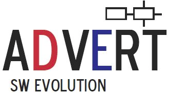

QVTr2Coq
QVTr2Coq is a systematic embedding of the QVT Relations (QVT-R) transformation language in Constructive Type Theory as implemented by the Coq proof assistant. The framework allows to manually construct and verify implementations of transformation programs in QVT-R.
Example Use as a Test Oracle
QVT-R semantics are complex and not well understood. At the present time, QVT-R semantics are implicitly modeled in tooling, but we cannot be sure if interpreters do what we expect the QVT-R specification to do.
One solution to this problem is to build a test oracle that can be utilised to semi-automatically construct reference implementations of individual transformations to test QVT-R execution engines. Because of the problem-oriented nature of the QVT-R language, there is a gap between specification and the actual interpretation of QVT-R programs. To ensure that a model transformation specified in QVT-R results in the intended behaviour, it must be tested.
For demonstration, we used the framework to generate a CTT specification from the well-known UML2RDBMS example transformation. The specification is then verified in a manual step and an implementation is extracted.
For additional details on this use case please consult our publication.
Features
Soon to be added.
Installing
QVTr2Coq runs on the Eclipse Modeling Tools. The following steps assume a fresh installation of Eclipse.
- Download Eclipse Modeling Tools 4.3 (Kepler) (Kepler);
- Download and install in Eclipse (through the Help > Install New Software...) menu the following archives in the given order:
- Eclipse Xtext 2.5+ of the Model Development Tools (MDT) project;
- Eclipse QVTd 0.10+ of the Model to Model Transformation (MMT) project;
- Download QVTr2Coq;
- Import the QVTr2Coq project into your Eclipse workspace.
You are ready to use the code generator to produce Coq specifications from QVT-R programs, Ecore metamodels and instances thereof.
Publications
- A. Rentschler, J. Terrell, S. Zschaler, L. Happe, R. Reussner. Testing QVT-R Transformation Tools with Coq-Verified Implementations. Submitted to the 7th International Conference on Model Transformation (ICMT'14).
Contributors
This research is a cooperation between King's College London (KCL) and Karlsruhe Institute of Technology (KIT). Work has partly been funded by the German Research Foundation (DFG) under grant No. RE 1674/5-1: Model-Driven Methods and Tools for Performance Prediction and Capacity Planning of Component-Based Software Systems and the Priority Programme SPP 1593: Design For Future – Managed Software Evolution.
